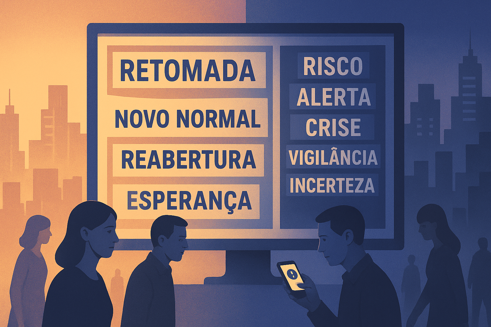

Discursos da Mídia Pós-Pandemia: normalidade e medo na construção do imaginário social
A pandemia da COVID-19 representou uma ruptura histórica não apenas nos sistemas de saúde e na economia global, mas também na forma como a mídia passou a construir narrativas sobre o mundo contemporâneo. No período pós-pandêmico, os discursos jornalísticos, políticos e cotidianos sofreram profundas reconfigurações, oscilando entre a promessa de retorno à normalidade e a manutenção de um estado permanente de alerta e medo. Nesse contexto, compreender os discursos da mídia implica analisar como sentidos são produzidos, legitimados e disseminados socialmente.
1. A mídia como produtora de sentidos em contextos de crise
Em contextos de crise, a mídia assume papel central na mediação entre fatos, interpretações e experiências sociais. Durante a pandemia, veículos jornalísticos tornaram-se fontes primárias de informação, organizando dados científicos, discursos institucionais e orientações sanitárias. No cenário pós-pandêmico, essa centralidade permanece, embora ressignificada por novos enquadramentos discursivos.
A crise sanitária consolidou um modelo de comunicação baseado na urgência, no risco e na vigilância. Mesmo após a redução dos índices de contágio e mortalidade, a linguagem da emergência continuou presente, reforçando a ideia de que a sociedade vive sob ameaça constante. Assim, a mídia não apenas relata acontecimentos, mas constrói quadros interpretativos que moldam a percepção coletiva do presente.
2. O discurso da normalidade: retorno ou reinvenção?
A noção de “volta à normalidade” tornou-se recorrente no discurso midiático e político após o período mais crítico da pandemia. Termos como “retomada”, “reabertura” e “novo normal” passaram a ocupar o centro das narrativas, sugerindo um movimento de superação da crise. No entanto, essa normalidade não corresponde necessariamente à realidade anterior ao evento pandêmico.
O discurso da normalidade funciona, muitas vezes, como estratégia simbólica de estabilização social. Ao enfatizar a recuperação econômica e a retomada das atividades produtivas, a mídia tende a minimizar as marcas deixadas pela pandemia, como o aumento das desigualdades sociais, o impacto psicológico coletivo e a precarização das relações de trabalho. Dessa forma, a normalidade apresentada é mais um ideal discursivo do que uma condição efetivamente vivida.
3. O medo como elemento estruturante do discurso pós-pandêmico
Apesar da retórica da normalização, o medo permanece como elemento central nos discursos pós-pandêmicos. Ele se manifesta de maneira difusa, associado a novas ameaças sanitárias, crises econômicas, instabilidades políticas e riscos globais. A experiência pandêmica ampliou a sensibilidade social ao perigo, tornando o medo uma emoção socialmente legitimada.
A mídia contribui para a manutenção desse estado de alerta ao enfatizar cenários de incerteza e possíveis crises futuras. Ainda que tais alertas possuam fundamento em dados reais, sua recorrência produz um ambiente simbólico marcado pela insegurança permanente. Assim, o medo deixa de ser apenas uma reação pontual e passa a estruturar o imaginário social contemporâneo.
4. Discursos políticos, saúde e controle social
No campo político, o pós-pandemia intensificou debates sobre autoridade, ciência e liberdade individual. Discursos governamentais frequentemente recorrem à memória da crise sanitária para justificar políticas de vigilância, investimentos em segurança e redefinições nas estratégias de saúde pública. A mídia atua como espaço de circulação e legitimação desses discursos.
Nesse cenário, observa-se uma redefinição das fronteiras entre cuidado e controle. Medidas apresentadas como proteção coletiva podem, simultaneamente, ampliar mecanismos de monitoramento social. O discurso político-midiático pós-pandêmico, portanto, revela tensões entre a necessidade de prevenção e o risco de naturalização de práticas de controle simbólico e institucional.
5. Impactos nos discursos cotidianos e no comportamento social
Os discursos midiáticos e políticos extrapolam as esferas institucionais e atravessam o cotidiano. A pandemia consolidou novas formas de falar sobre o corpo, a saúde e o outro, incorporando termos técnicos e narrativas de prevenção ao senso comum. No pós-pandemia, esses elementos permanecem presentes na linguagem cotidiana.
Práticas sociais passam a ser avaliadas sob a lógica do risco, da responsabilidade individual e da autoproteção. Com isso, observa-se a permanência de discursos de vigilância mútua e de julgamento moral de comportamentos considerados inadequados. A experiência pandêmica, assim, deixa marcas profundas na forma como os sujeitos se relacionam entre si e com o espaço social.
6. Considerações finais
Os discursos da mídia no pós-pandemia evidenciam uma sociedade em processo de reorganização simbólica, marcada pela tentativa de reconstrução da normalidade e pela permanência do medo como elemento estruturante. Longe de representar um simples retorno ao passado, o período pós-pandêmico configura-se como um campo de disputas discursivas em torno da segurança, da liberdade e do futuro coletivo.
Compreender esses discursos é fundamental para analisar os rumos da vida social contemporânea. Ao narrar o presente, a mídia influencia comportamentos, expectativas e decisões políticas, produzindo sentidos que moldam a realidade social. Assim, mais do que informar, os discursos pós-pandêmicos continuam a exercer papel decisivo na construção do imaginário social.
Referências
BAUMAN, Z. Medo líquido. Rio de Janeiro: Zahar, 2008.
FOUCAULT, M. Microfísica do poder. Rio de Janeiro: Graal, 2014.
ORLANDI, E. P. Análise de discurso: princípios e procedimentos. Campinas: Pontes, 2015.
SODRÉ, M. A narração do fato: notas para uma teoria do acontecimento. Petrópolis: Vozes, 2009.
SANTOS, B. S. A cruel pedagogia do vírus. Coimbra: Almedina, 2020.
Explore Outros Conteúdos
Continue seus estudos acessando outras seções do site Mestre Kira: